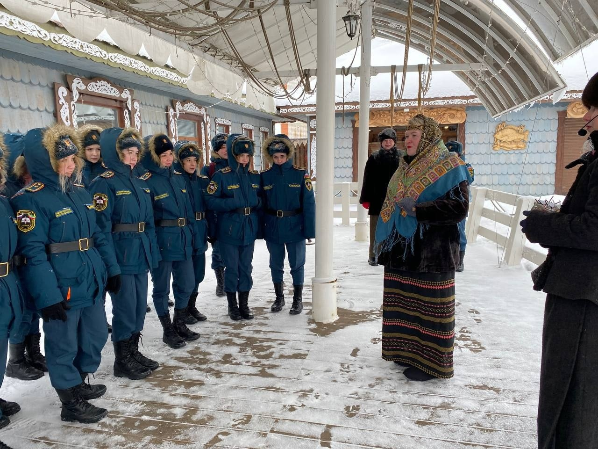

Студенческая жизнь
Весна, молодость и "Теплый вечер"
Инициативная группа студентов под руководством Ивана Рыжего и Василя Нигматзянова 28 марта организовали развлекательный вечер для студентов и преподавателей.
Как всегда - неподражаемый конферанс, атмосфера юмора и доверия, позволила раскрепоститься участникам, и воплотиться задумке организаторов - в неформальной обстановке сблизить педагогов и студентов.
Весёлые конкурсы, энергичная музыка, оглушающие аплодисменты! Всё это подарило незабываемые впечатления от "Тёплого вечера".
Инициативная группа студентов под руководством Ивана Рыжего и Василя Нигматзянова 28 марта организовали развлекательный вечер для студентов и преподавателей.
Как всегда - неподражаемый конферанс, атмосфера юмора и доверия, позволила раскрепоститься участникам, и воплотиться задумке организаторов - в неформальной обстановке сблизить педагогов и студентов.
Весёлые конкурсы, энергичная музыка, оглушающие аплодисменты! Всё это подарило незабываемые впечатления от "Тёплого вечера".
В этом мероприятии приняли участие студенты 112
группы
Майор
Булочкин и женский батальон)
Спектакль Буинского драматического театра "Небесный тихоход", 13
марта 2023 г.
Понедельник - Встреча.
Масленница в музее истории рыболовства Тетюшского края.
Масленница в музее истории рыболовства Тетюшского края.

 ДЕНЬ
СВЯТОГО ВАЛЕНТИНА
ДЕНЬ
СВЯТОГО ВАЛЕНТИНАСегодня в нашем колледже состоялось мероприятии посвященное ДНЮ ВСЕХ ВЛЮБЛЕННЫХ
Студенческий
совет организовал просмотр фильма «Холоп» и импровизационное
караоке 
Студенты и преподаватели получили массу положительных эмоций и просто хорошо провели время
Студенты и преподаватели получили массу положительных эмоций и просто хорошо провели время

ВСТРЕЧА
В ТЕПЛОМ И ДРУЖЕСКОМ КРУГУ 
9
февраля в нашем любимом колледже,впервые прошел ГИТАРНИК
Студенты колледжа хорошо провели время ,и у всех остались только позитивные эмоции
Надеемся , что ГИТАРНИК останется в нашем колледже
Студенты колледжа хорошо провели время ,и у всех остались только позитивные эмоции
Надеемся , что ГИТАРНИК останется в нашем колледже